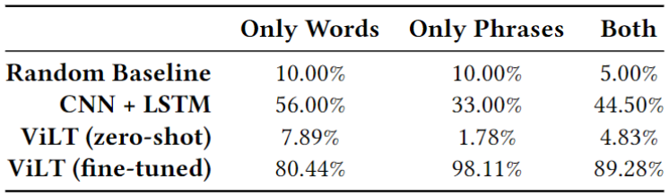

In this last blog update, we will present and discuss the fine-tuning results of the vision-and-language transformer (ViLT) on our testing dataset, compare it with our baselines, show our demo video, and finally conclude our project and highlight potential future directions.
Fine-tuning Results
After assessing the zero-shot performance of the ViLT model in the previous blog post, we moved on to fine-tune our ViLT model on our fine-tuning dataset (6200 instances) as described in blog post 4. The figure below shows the loss curve during the fine-tuning process. As can be seen, the model was able to converge after around 1300 steps, which means that the remaining steps might have been unnecessary.
As with the zero-shot experiment, we test the fine-tuned ViLT model on our testing dataset (1800 intances) in a multi-class classification problem with 20 classes (correspoding to the 20 different utterances in our dataset). The classificaiton accuracy was found to be 89.28%, which is a huge improvement over the zero-shot results. The below figure demonstrates the resulting confusion matrix.
We then compared our different testing results with those of our baselines: random guess and an encoder-decoder approach of a CNN and an LSTM by Garg et al. (2016). The figure below shows a summary of that comparison. It seems like the fine-tuned ViLT model achieved a much higher accuracy compared to the baselines. However, there is a possibility that the model might have overfitted.
Check out our final demo video below where we perform several inferences using our fine-tuned ViLT model! From the video, we can see that the average inference time is as small as about 141 ms!
Conclusions & Future Work
As we have seen, our fine-tuned ViLT model was able to achieve an overall accuracy of almost 90% in the lip-reading task with an inference time of about 150 ms. Although there is a possibility that the model has overfitted, this still demonstrates a great potential and hints that multi-modal models should be capable of performing lip-reading. It is worth noting that a more simplified procedure for the data preprocessing would be worth experimenting. In addition, this dataset might have been a little bit unbalanced. For instance, it has the following 3 utterances: "Stop", "Navigation", and "Stop navigation", which means that the utterance "Stop navigation" might have had a few more fine-tuning instances. From the above conclusions, we put forward the following potential future directions:
- We need to check whether the ViLT model has overfitted.
- We can possibly try taking as input the video and directly performing 3D volume embedding in order to simplify the data preprocessing step.
- We should probably use a better dataset that not only contains more instances, more words and more phrases, but that is also more balanced.
- With this potential from the ViLT, other lightweight models should also be investigated.
- We can move on to deploy the model onto portable devices.
Click Here to see our full final presentation slides!